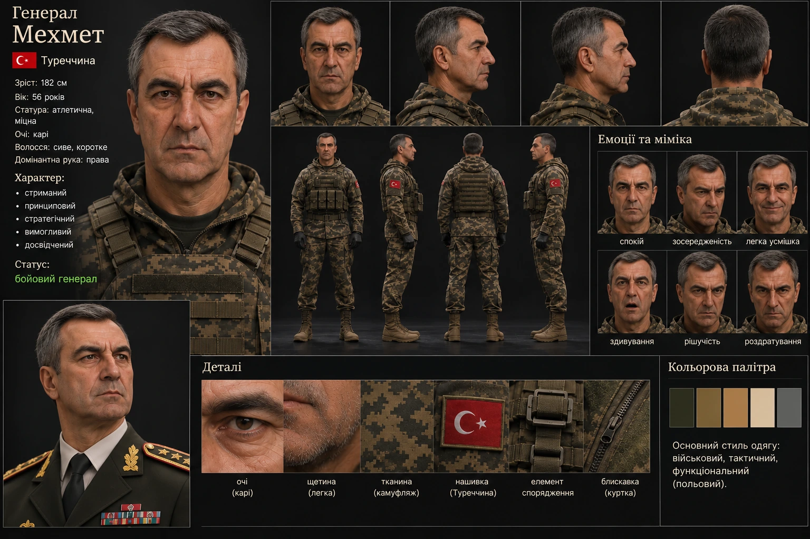

ОСНОВНА ІНФОРМАЦІЯ
Генерал турецької армії
Мехмет — турецький генерал, який регулярно обмінюється з українським генералом Олексієм оперативною інформацією щодо логістики, розвідки та постачання озброєння. За три роки співпраці вони потоваришували, а їхні регулярні сеанси зв’язку стали не лише службовим обов’язком, а й нагодою поговорити як друзі.
Ім’я: Мехмет
Країна: Туреччина
Посада: генерал
Вік: 56 років (за профільним аркушем)
Зріст: 182 см (за профільним аркушем)
Статура: атлетична, міцна (за профільним аркушем)
Очі: карі (за профільним аркушем)
Волосся: коротке, сиве (за профільним аркушем)
Домінантна рука: права (за профільним аркушем)
Характер: стриманий, принциповий, стратегічний, вимогливий, досвідчений (за профільним аркушем)
РОЛЬ У СЮЖЕТІ
Друг, союзник і представник Ордена
Мехмет попереджає Олексія про підготовлену зраду та скорочення підтримки України. Згодом він виступає від імені Ордена й передає ультиматум про капітуляцію. Особисті почуття до давнього друга не зникають, однак Мехмет діє як представник структури, до якої приєднався.
Олексій відмовляється прийняти умови Ордена. Мехмет передає відповідь, хоча йому важко змиритися з вибором друга. Після зміни обставин військова співпраця між ними відновлюється в межах офіційних процедур.
У рукописному фрагменті не вказано його повного імені, родини чи докладної військової біографії. Такі відомості не додаються.